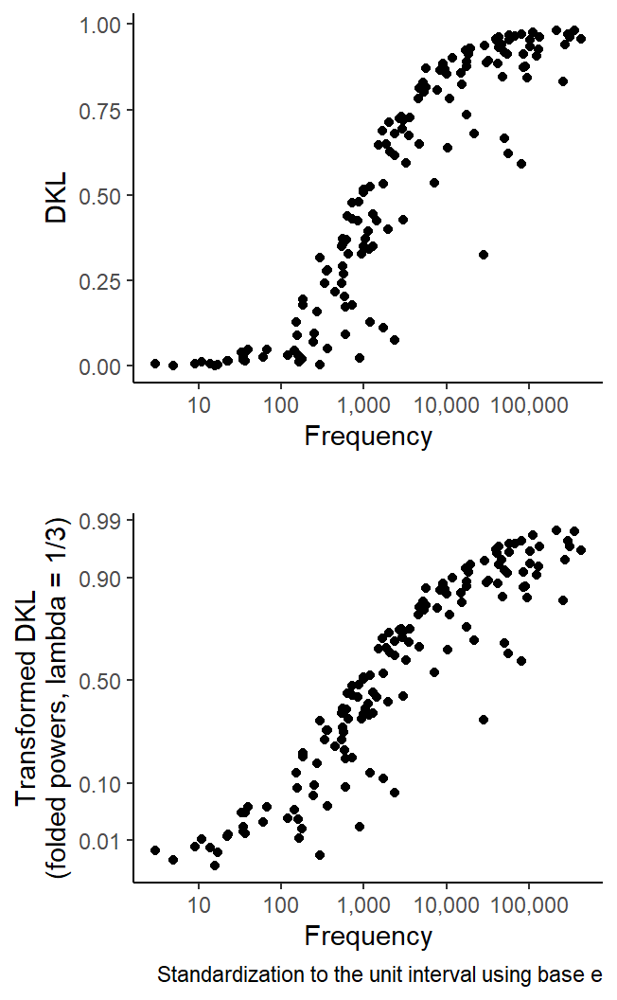

This blog post demonstrates a new functionality of the {tlda} package: The implementation of Tukey’s folded power transformation for proportions (and percentages), including its use in data visualization with {ggplot2}.
# may need to install latest development version directly from Github#pak::pak("lsoenning/tlda")library(tlda) # for access to datasetslibrary(lattice) # for data visualizationlibrary(tidyverse) # for data wranglingsource("C:/Users/ba4rh5/Work Folders/My Files/R projects/my_utils_website.R")
In corpus linguistics, we often deal with quantities that range between 0 and 1. Examples are proportions (and percentages) and dispersion scores. Sometimes the distribution we observe gravitates toward the upper and/or lower end of the scale, which degrades resolution. In such cases, a transformation that stretches the scale near the endpoints can help. Three transformations are often applied to scores in the unit interval [0, 1] (see Fox 2016, 72–75). In the following, \(x\) refers to these bounded scores (e.g. proportions or dispersion scores):
The logit transformation, i.e. the (natural) log of the odds: \(\textrm{log}_e(\frac{x}{1-x})\); this transformation is unable to handle the endpoints, i.e. scores of 0 and 1
The probit transformation, i.e. the inverse standard normal distribution function; this transformation likewise shuns 0 and 1
The arcsine square-root (or angular) transformation: \(\textrm{sin}^{-1}\sqrt{x}\); this form of re-expression accepts the values 0 and 1
Folded power transformation
In his landmark work Exploratory data analysis, Tukey (1977, 498–502) introduced folded roots and folded logs for the transformation of proportions. Both are special cases of what are known as folded power transformations(see also Mosteller and Tukey 1977, 92). The formula for this class of re-expressions is the following, where \(x\) again refers to the bounded quantity that is to be transformed and \(\lambda\) is the power to which the two terms, \(x\) and \((1-x)\), are raised:
\[
x^\lambda - (1-x)^\lambda
\]
The choice of lambda affects how much the ends of the unit interval are stretched out relative to the center. Interestingly, the folded power transformation includes (approximations to) a number of familiar forms of re-expression:
folded roots: `\(\lambda = 0.5\)
arcsine-square-root (or angular) transformation: a close approximation is given by \(\lambda = 0.41\)(see Fox 2016, 74)
folded cube roots: \(\lambda = 1/3\)
probit transformation: a close approximation is given by \(\lambda = 0.14\)(see Fox 2016, 74) while accepting input scores of 0 and 1
For \(\lambda = 0\) , the logit transformation is the limiting case; note that input scores of 0 and 1 are not allowed when \(\lambda\) is set to 0
The following graph shows how the amount of local compression/expansion of the unit interval changes with the choice of \(\lambda\), which ranges from 1 at the bottom (no transformation, i.e. identity) to 0.14 at the top. As \(\lambda\) increases, the ends of the unit interval are stretched out more and more vigorously.
Figure 1: Diagram showing how the choice of lambda affects how much the center of the unit interval is compressed relative to the edges.
The power (\(\lambda\)) typically ranges between 0 and 1 (no transformation). For \(\lambda = 0\), the logit transformation is used. However, the logit of 0 and 1 is not defined, which is why \(\lambda = 0\) is not included in the figure above.
Another version of the folded power transformation
The version of the folded power transformation we have encountered so far maps scores to the interval \([-1, +1]\), irrespective of the choice of power. There is another version that is frequently used, which does not impose these constraints:
\[
\frac{x^\lambda - (1-x)^\lambda}{\lambda}
\]
We can also inspect this version graphically, by mimicking a plot that Tukey (1977, 502) drew. I really like the way he introduces this graph: “As always, it is nice to look at changes of expression graphically as well as in numbers. In this situation, where we think and write of ‘stretching the tails’, it is usually desirable to compare the different scales side by side and both watch and feel – to the extent that the feeling can be given – the tails stretch more and more […].” (Tukey 1977, 501–2)
Figure 2 gives us a feel for the folded power transformation. It provides another way of appreciating the way in which different values of \(\lambda\) stretch the ends of the interval relative to the middle.
Figure 2: Diagram showing how the choice of lambda affects how much the edges of the unit interval are stretched out relative to the center.
There are two reasons why folded power transformations are attractive when working with scores in the unit interval. First, with the exception of the logit transformation, they can handle the endpoints (0 and 1). Further, they give the user flexibility in the choice of \(\lambda\), with (approximations to) various special cases along the continuum from 0 to 1.
Implementation in the {tlda} package
Folded power transformations are implemented in the R package {tlda}(Sönning 2025). You may need to install the development version from Github:
pak::pak("lsoenning/tlda")
The function fpower() can be used to re-express proportions using different powers (i.e. values for lambda). For illustration, consider the following sequence of proportions:
x_seq <-seq(0, 1, .1)x_seq
[1] 0.0 0.1 0.2 0.3 0.4 0.5 0.6 0.7 0.8 0.9 1.0
The following code transforms this sequence to folded roots (\(\lambda = 0.5\)), mapped to the interval [-1, +1]:
Using folded-power-transformed scales with {ggplot2}
The {tlda} package also offers the functions scale_x_fpower() and scale_y_fpower(), which can be integrated into {ggplot2} code to plot data on a transformed scale (while keeping the original units as tick mark labels). For illustration, we consider a set of dispersion scores: Specifically, Rosengren’s S(Rosengren 1971) for the dispersion of 150 selected items (Biber et al. 2016) across speakers in the Spoken BNC2014. In this analysis, then, the speakers are the corpus parts. The data are available as the dataset biber150_spokenBNC2014 in the {tlda} package. We start by calculating Rosengren’s S for the 150 items (since two items from the list do not appear in the Spoken BNC2014, we are actually looking at only 148 items):
If we look at the distribution of these dispersion scores, we note that they are pushing against the ceiling: as the following dot diagram shows, there are many items with a dispersion score near 1 (which indicates a very even, or balanced, distribution across speakers):
Figure 3: Dot diagram showing the distribution of S scores for the 148 items.
It helps if we apply a folded power transformation with \(\lambda = 0.14\), which approximates the shape of the probit transformation and stretches the tails considerably. We simply add the function scale_x_fpower() to the plotting call:
Figure 4: Dot diagram showing the distribution of the transformed S scores for the 148 items.
As a second example, let us compute the dispersion measure DA(Burch, Egbert, and Biber 2017) for the 150 items, this time in the Spoken BNC1994 (four items from the list do not appear in the Spoken BNC1994, so we are looking at only 146 items):
Figure 5: Dot diagram showing the distribution of DA scores for the 146 items.
We can alleviate the skew with a folded power transformations, setting \(\lambda = 0.41\). Recall that this gives us a close approximation to the arcsine-square-root (angular) transformation:
Figure 6: Dot diagram showing the distribution of the transformed DA scores for the 146 items.
As a final example, we will draw a scatterplot with a transformed y-axis. The following graph looks at the association between dispersion (as measured by DKL, standardization using base e) and the corpus frequency of the 150 items in the Spoken BNC2014. The top panel shows untransfored dispersion scores on the y-axis, the bottom panel folded-power-transformed scores (\(\lambda = 1/3\), i.e. folded cube roots).
Draw figure
DKL_spokenBNC2014 <-disp_DKL_tdm(tdm = biber150_spokenBNC2014, row_partsize ="first",standardization ="base_e",print_score =FALSE,verbose =FALSE)p1 <- DKL_spokenBNC2014 |>ggplot(aes(x = frequency, y = DKL)) +geom_point() +ylab("\nDKL") +xlab("Frequency") +scale_x_log10(labels = scales::comma) +theme_classic() +labs(caption =" ")p2 <- DKL_spokenBNC2014 |>ggplot(aes(x = frequency, y = DKL)) +geom_point() +ylab("Transformed DKL\n(folded powers, lambda = 1/3)") +xlab("Frequency") +scale_x_log10(labels = scales::comma) +theme_classic() +scale_y_fpower(lambda =1/3, breaks =c(0, .01, .1, .5, .9, .99)) +labs(caption ="Standardization to the unit interval using base e")cowplot::plot_grid(p1, p2, nrow =2)

Figure 7: Scatterplot graphing DKL scores against frequency for the 148 items.
References
Biber, Douglas, Randi Reppen, Erin Schnur, and Romy Ghanem. 2016. “On the (Non)utility of Juilland’sDto Measure Lexical Dispersion in Large Corpora.”International Journal of Corpus Linguistics 21 (4): 439–64. https://doi.org/10.1075/ijcl.21.4.01bib.
Burch, Brent, Jesse Egbert, and Douglas Biber. 2017. “Measuring and Interpreting Lexical Dispersion in Corpus Linguistics.”Journal of Research Design and Statistics in Linguistics and Communication Science 3 (2): 189–216. https://doi.org/10.1558/jrds.33066.
Fox, John. 2016. Applied Regression Analysis and Generalized Linear Models. London: Sage.
Mosteller, Frederick, and John W. Tukey. 1977. Data Analysis and Regression: A Second Course in Statistics. Reading, MA: Addison Wesley.
Rosengren, Inger. 1971. “The Quantitative Concept of Language and Its Relation to the Structure of Frequency Dictionaries.”Etudes de Linguistique Appliquee (Nouvelle Serie) 1: 103–27.
![]()